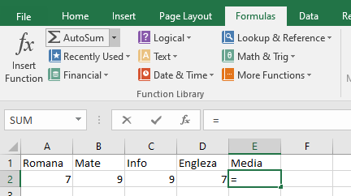

Microsoft Excel este un program de calcul tabelar.Actuala versiune disponibilă este Microsoft Excel 365 — pentru Windows — şi Microsoft Excel 2016 — pentru Mac OS.
Celula reprezintă componenta fundamentală a unei foi de calcul în Excel.O celulă în Excel este alcătuită din mai multe componente importante, cum ar fi:
1. Sortarea datelor dintr-o coloană.
2. Introducerea formulelor.

3. Introducerea funcţiilor din librăria de funcţii.
Unele dintre cele mai folosite funcţii sunt cele pentru calcule matematice elementare :
Sintaxa |
Valoarea returnată |
ABS(n) |
Valoarea absolută (modulul) lui n |
EXP(n) |
en (e=2,718282) |
INT(n) |
Partea întreagă a lui n |
SQRT(n) |
Radical din n (n>0) |
LOG(n) |
Logaritm în baza 10 din n |
LG(n) |
Logaritm natural din n |
ROUND(n1;n2) |
Rotunjire a valorii numerice n1 la un număr cu n2 zecimale |
Iată câteva exemple:
= ABS(-91) --> funcţia returnează valoarea 91
= EXP(LN(48)) --> funcţia returnează valoarea 48
= SQRT(INT(12.34) + ROUND(3.78)) --> funcţia returnează valoarea 4 = radical (12 + 4)
O altă categorie de funcţii o constituie cele cu caracter statistic, cele mai importante fiind prezentate în tabelul alăturat:
Sintaxa |
Valoarea returnată |
COUNT(n1;n2;...) |
Numărul de valori conţinute în celulele domeniului respectiv, adică numărul de celule |
SUM(n1;n2;...) |
Suma valorilor din celulele domeniului |
AVERAGE(n1;n2;...) |
Media aritmetică a valorilor din celulele domeniului |
MAX(n1;n2;...) |
Valoarea maximă dintre valorile din celulele domeniului |
MIN(n1;n2;...) |
Valoarea minimă dintre valorile din celulele domeniului |
STDEV(n1;n2;...) |
Deviaţia standard a valorilor din celulele domeniului |
Exemple:
Iată ce se obţine după editarea funcţiilor enunţate în exemple:
4. Funcţia IF.
Sintaxa funcţiei este:
IF (expL; arg1; arg2)
Astfel: expL reprezintă o expresie logică. Dacă prin evaluarea acesteia se obţine valoarea TRUE, funcţia va returna arg1, în caz contrar returnând arg2. Aceste argumente pot fi de tip numeric, text, dată calendaristică, timp sau logic.
Exemple:
Exemplul 1: = IF (E4>=5; "admis"; "respins") - retunează admis sau respins în funcţie de condiţia pusă E4>=5.
Exemplul 2: = IF (C3>=C4; IF(C3>=C2; C3; C2); IF (C4>=C2; C4; C2)) - returnează valoarea maximă conţinută în celulele C2, C3 şi C4.
5. Copierea unei funcţii sau formule.
Se selectează celula care conţine funcţia (formula) → Se poziţionează pointerul mouse-ului în colţul dreapta jos al celulei până când pointerul se transformă într-o cruce neagră +→ se apasă butonul stâng şi cu el ţinut apăsat ne deplasăm pe rândul de celule unde dorim să copiem funcţia (formula).
6. APLICAŢIE: